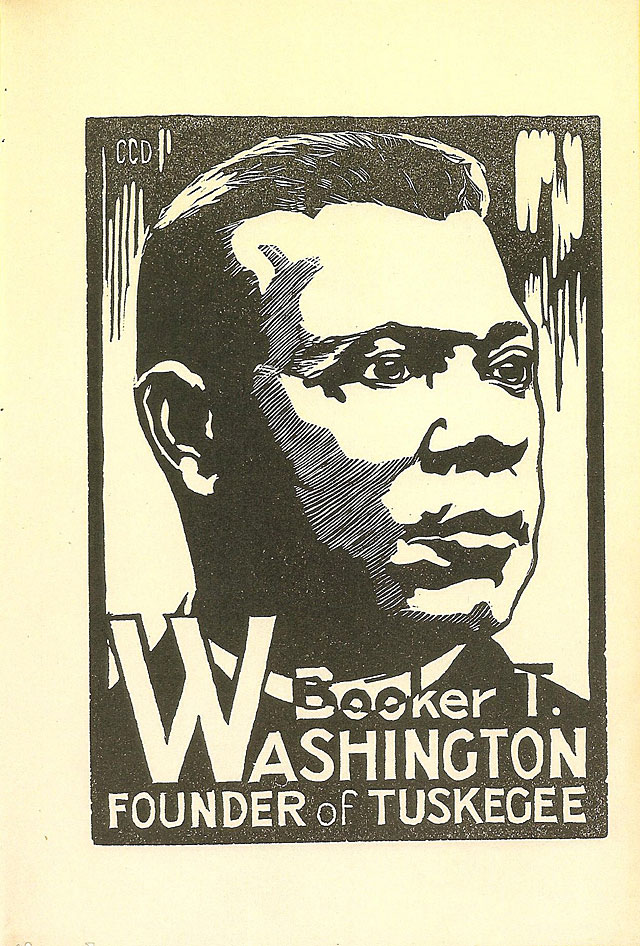
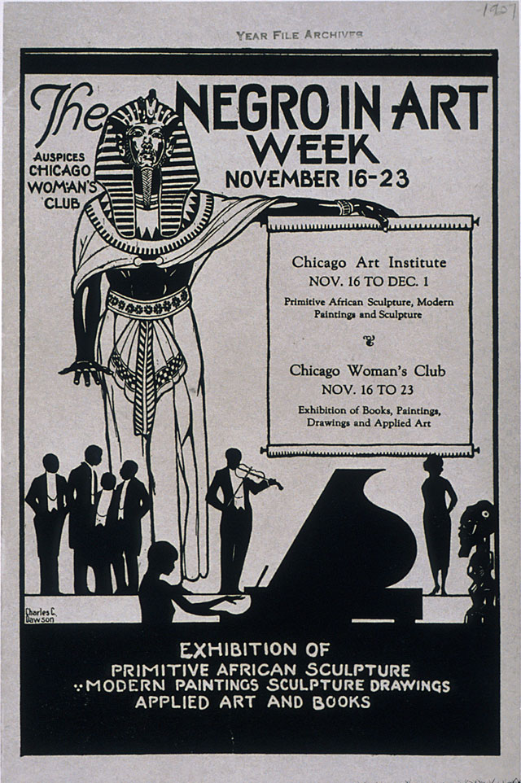
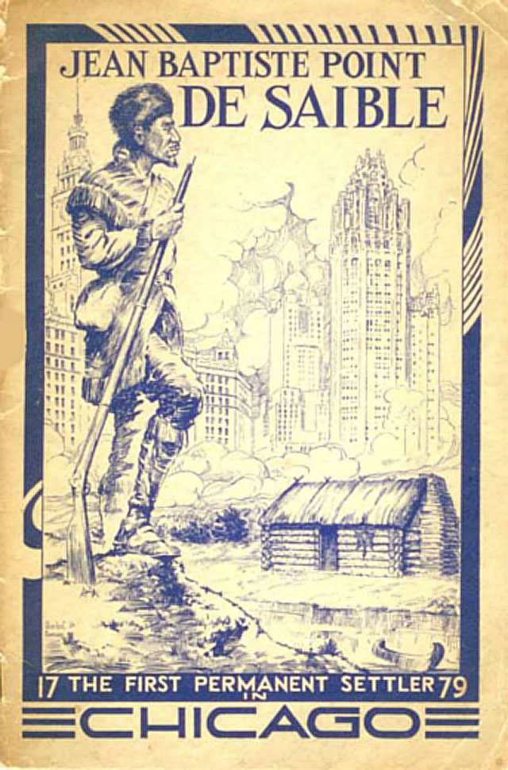

Introduction
Today's story comes from the history vault of AIGA. Due to the very limited information on the web for Charles Dawson, I was unable to rewrite the story with more dates and information associated with his life, but I do think this story is important to black history and It's a great story to share for Black History Month. This is the story of Charles Dawson life. The biography was written by Daniel Schulman on September 1, 2008, from the AIGA Design Journeys collection.
The story of Charles Dawson
One of Chicago's leading black artists and designers in the 1920s and '30s, Charles Clarence Dawson is best known for his illustrated advertisements for beauty schools and products, such as Annie Malone's Poro College and Valmor Products, which were targeted to the city's burgeoning black population. Enterprising, self-assured and a tireless “Race Man,” Dawson made powerful contributions to the efforts of black artists in the city to achieve recognition.
Dawson's life story is told in great detail and piquancy in an unpublished—and rarely cited—autobiography, which is now in the DuSable Museum of African American History in Chicago. Born to hard-working, middle class parents in the Atlantic-coast town of Brunswick, Georgia, Dawson attended Booker T. Washington's famed Tuskegee Institute. After two years, during which Dawson studied drafting with architect Walter Bailey, Dawson left Tuskegee for New York in 1907, where he became the first African American to be admitted to the Art Students League. While working odd jobs to pay tuition expenses, Dawson toiled in George Bridgman's evening antique and then life-drawing classes, eventually receiving the artist's approval.
With money earned in the summer of 1912 working in a Pullman buffet club car, Dawson was able to fulfill his dream of attending the Art Institute of Chicago. In contrast to the Art Students League, where Dawson experienced overt racial hostility, the policy of the Art Institute, in Dawson's words, was “entirely free of bias.” In addition to spending summers as a Pullman porter out of Chicago, Dawson was helped by Art Institute staff to find a number of interesting jobs to help him with tuition. As a waiter at Chicago's elite Cliff Dwellers Club, he watched proudly as African American émigré artist Henry Ossawa Tanner was treated as an honored visitor. He was also secretary of the Chicago Architectural League and manager of the Annual Chicago Architectural Exhibition, held at the Art Institute. Dawson threw himself into student organizations such as the Art Students League of Chicago, and was a founding member of the Arts and Letters Society, which was the first black artists collective in Chicago. Dawson's attempts to assert his leadership over black students at the Art Institute fueled a rivalry with his younger classmate, Archibald J. Motley, Jr., who would go on to become a more famous artist than Dawson.
After graduation from the School of the Art Institute in 1917, only weeks after the United States entered World War I, Dawson was accepted for officer training in the segregated armed forces. He saw combat in France as a lieutenant in the all-black 36th Regiment of the 92nd Infantry Division, the Buffalo Soldiers. Dawson returned to a changed Chicago. Tensions between the growing black community and a white working-class population in search of jobs after the war resulted in the Race Riot of 1919, which left 35 dead and hundreds injured over a two-week period in late July and early August. At the same time, blacks in Chicago were beginning to gain economic and political power; they also took part (as did blacks in New York) in the program of cultural modernization, known as the New Negro Movement.
Dawson played a role in both the cultural and economic rise of blacks in the 1920s. From 1919 to 1922 he worked as a salesman and account manager for a downtown firm called Chicago Engravers, where he served black and white clients. Leaving the firm to become a freelancer, Dawson executed advertising illustrations for major black entrepreneurs—and competitors—Anthony Overton and Jesse Binga, who owned banks, newspapers and life insurance companies, and manufactured beauty products. Dawson also provided drawings for the short-lived Chicago magazine Reflexus (reflects us), as well as ads for black film director Oscar Micheaux.
Dawson continued to pursue work as a fine artist. With other alumni of the Art Institute, including William Edouard Scott and William McKnight Farrow, in 1924 Dawson established the black exhibiting group the Chicago Art League. He also played a key role in the most important manifestation of the New Negro Movement in the visual arts, the 1927 Negro in Art Week exhibition at the Art Institute of Chicago. Organized by Alain Locke and sponsored by the Chicago Woman's Club, the exhibition was the first to show African-American art at a major American museum.
With the onset of the Great Depression, which struck Chicago very hard, Dawson managed to stay afloat largely through his work for Valmor Products Company. The owner of the company, Morton Neumann, who later became famous as one of Chicago's great art collectors, refused to allow Dawson to sign his work. Dawson was the only black artist to have a substantial role in the 1933–1934 Century of Progress Fair, when he received a commission for a mural illustrating the Great Migration for the National Urban League's display in the Hall of Social Science. Dawson also produced a poster for the Pageant of Negro Music, O, Sing A New Song, which took place at Soldier Field as part of the Fair in August 1934. Another noteworthy product of the early 1930s was Dawson's children's book, ABCs of Great Negroes. The book, which Dawson self-published, consists of portraits of 26 historically significant men and women of African descent, executed in bold and stylized linoleum cut prints.
Dawson and Motley were the only two black artists in Illinois to work on the early New Deal art program, the Public Works of Art Project; but Dawson was quickly dropped for failure to demonstrate financial need. Dawson's career was changed when he was hired by another WPA program, the National Youth Administration (NYA). In 1940, his supervisors at the NYA tasked him with designing the layout for the American Negro Exposition, which had received an appropriation of $75,000 from the State of Illinois, but was foundering. Dawson designed the large space within the Chicago Coliseum and came up with the iconography for 20 dioramas illustrating African-American history.
Dawson ended his career back at Tuskegee, as curator of the Museum of Negro Art and Culture and the George Washington Carver Museum, from 1944 to 1951. Dawson retired to New Hope, Pennsylvania, where he lived until his death in 1981.